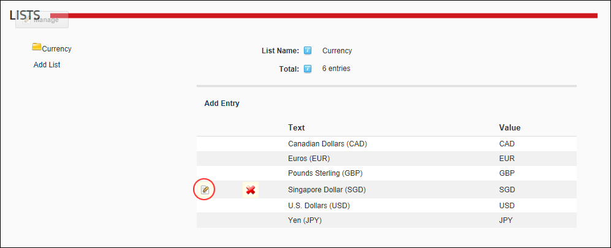

Adding a List Entry
How to add a new list entry to an existing list using the Admin Lists page. Lists created by users other than SuperUsers are automatically encoded for security purposes to prevent HTML and JavaScript being injected into the page. List entries can be added to lists maintained by Administrators on the Admin > List page, as well as lists maintained by SuperUsers on the Host > List page. In the below example, the new list entry is being added to the Currency list that is maintained by SuperUsers using the Host > List module.
- Navigate to Admin > Advanced Settings >
 Lists.
Lists.
- Click the Add List link.
- In the List Name text box, enter a name for the list. E.g. Currency
- At Parent List, leave this field set to None Specified.
- In the Entry Text text box, enter the first entry (item) that will be in this list. E.g. Singapore Dollar (SGD)
- In the Entry Value text box, enter the identifier or code for the first entry. E.g. SGD
- Optional. At Enable Sort Order, select from these options:
- if you want to be able to reorder the entries in this list.
- to use alphabetical sort order for list entries.

- Click the Save link. This displays the new currency type to the Currency list. Note: In the below image only the new list entry can be edited and deleted because the other entries are maintained by SuperUsers using the Host List module.